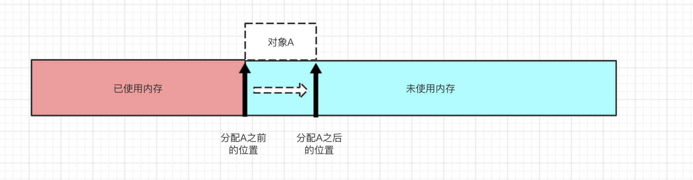

细说java 显式锁 Lock
锁是用于通过多个线程控制对共享资源的访问工具。通常锁提供对共享资源的独占访问，但是一些锁可能允许并发的访问共享资源，例如ReadWriteLock的读锁。
问:java中有了synchronized，为什么又会出现java显式锁呢？
答：Lock实现提供比使用synchronized方法可以获得更灵活、更广泛的锁定操作。
使用synchronized方法或语句提供对每个对象相关联的隐式监视器锁访问，但是强制所有锁获取和释放以块的结构方式发生，当获取多个锁的时候，他们必须以相反的顺序被释放，并且所有的锁都必须被释放在与他们相同的词汇范围内。
lock的使用应使用如下的惯用写法:
Lock l = ...;
l.lock();
try{
// 访问被此锁保护起来的相关资源
} finally{
l.unlock();
}
public interface Lock {
// 获得锁资源
void lock();
// 尝试获得锁，如果当前线程被调用了interrupted则中断，并抛出异常，否则就获得锁
void lockInterruptibly() throws InterruptedException;
// 判断能否获得锁，如果能获得，则获得锁，并返回true(此时已经获得了锁)
boolean tryLock();
// 保持给定的等待时间，如果期间能拿到锁，则获得锁，同样如果期间被中断，则抛异常
boolean tryLock(long time, TimeUnit unit) throws InterruptedException;
// 释放锁
void unlock();
// 返回与此Lock对象绑定Condition实例
Condition newCondition();
}
ReentrantLock重入锁，内部实现有公平锁和非公平锁。
可重入
重进入是指任意线程在获取到锁之后能够再次获取该锁而不会被锁所阻塞， 该特性的实现需要解决以下两个问题。
1)线程再次获取锁。锁需要去识别获取锁的线程是否为当前占据锁的线程， 如果是，则再次成功获取。
2)锁的最终释放。线程重复 n 次获取了锁，随后在第 n 次释放该锁后，其 他线程能够获取到该锁。锁的最终释放要求锁对于获取进行计数自增，计数表示 当前锁被重复获取的次数，而锁被释放时，计数自减，当计数等于 0 时表示锁已 经成功释放。
nonfairTryAcquire 方法增加了再次获取同步状态的处理逻辑:通过判断当前 线程是否为获取锁的线程来决定获取操作是否成功，如果是获取锁的线程再次请 求，则将同步状态值进行增加并返回 true，表示获取同步状态成功。同步状态表 示锁被一个线程重复获取的次数。
如果该锁被获取了 n 次，那么前(n-1)次 tryRelease(int releases)方法必须返回 false，而只有同步状态完全释放了，才能返回 true。可以看到，该方法将同步状 态是否为 0 作为最终释放的条件，当同步状态为 0 时，将占有线程设置为 null， 并返回 true，表示释放成功。
公平和非公平锁
public ReentrantLock(boolean fair) {
sync = fair ? new FairSync() : new NonfairSync();
}
ReentrantLock 的构造函数中，默认的无参构造函数将会把 Sync 对象创建为NonfairSync 对象，这是一个“非公平锁”;
而另一个构造函数 ReentrantLock(boolean fair)传入参数为 true 时将会把 Sync 对象创建为“公平锁” FairSync。
nonfairTryAcquire(int acquires)方法，对于非公平锁，只要 CAS 设置同步状态 成功，则表示当前线程获取了锁，而公平锁则不同。
tryAcquire 方法，该方法与nonfairTryAcquire(int acquires)比较，唯一不同的位置为判断条件多了 hasQueuedPredecessors()方法，即加入了同步队列中当前节点是否有前驱节点的判断，如果该方法返回 true，则表示有线程比当前线程更早地请求获取锁，因此 需要等待前驱线程获取并释放锁之后才能继续获取锁。
final boolean nonfairTryAcquire(int acquires) {
final Thread current = Thread.currentThread();
int c = getState();
if (c == 0) {
if (compareAndSetState(0, acquires)) {
setExclusiveOwnerThread(current);
return true;
}
} else if (current == getExclusiveOwnerThread()) {
int nextc = c + acquires;
if (nextc < 0) // overflow
throw new Error("Maximum lock count exceeded");
setState(nextc);
return true;
}
return false;
}
protected final boolean tryAcquire(int acquires) {
final Thread current = Thread.currentThread();
int c = getState();
if (c == 0) {
if (!hasQueuedPredecessors() &&
compareAndSetState(0, acquires)) {
setExclusiveOwnerThread(current);
return true;
}
} else if (current == getExclusiveOwnerThread()) {
int nextc = c + acquires;
if (nextc < 0)
throw new Error("Maximum lock count exceeded");
setState(nextc);
return true;
}
return false;
}
protected final boolean tryRelease(int releases) {
int c = getState() - releases;
if (Thread.currentThread() != getExclusiveOwnerThread())
throw new IllegalMonitorStateException();
boolean free = false;
if (c == 0) {
free = true;
setExclusiveOwnerThread(null);
}
setState(c);
return free;
}
condition接口
Condition与Lock要结合使用，使用Condition可以用来实现wait()和notify()/notifyAll()类似的等待/通知模式。与Object对象里不同的是，Condition更加灵活，可以在一个Lock对象里创建多个Condition实例，有选择的进行线程通知，在线程调度上更加灵活。
Condition接口的通过
java.util.concurrent.locks.AbstractQueuedSynchronizer.ConditionObject
细说AbstractQueuedSynchronizer(AQS)
来实现。
使用Condition注释上的栗子：
/**
* 阻塞的有界队列
*/
public class BoundedBuffer {
final Lock lock = new ReentrantLock();
final Condition notFull = lock.newCondition();
final Condition notEmpty = lock.newCondition();
final Object[] items = new Object[100];
int putptr, takeptr, count;
public void put(Object x) throws InterruptedException {
lock.lock();
try {
// 当count等于数组的大小时，当前线程等待，直到notFull通知，再进行生产
while (count == items.length)
notFull.await();
items[putptr] = x;
if (++putptr == items.length) putptr = 0;
++count;
notEmpty.signal();
} finally {
lock.unlock();
}
}
public Object take() throws InterruptedException {
lock.lock();
try {
// 当count为0，进入等待，直到notEmpty通知，进行消费。
while (count == 0)
notEmpty.await();
Object x = items[takeptr];
if (++takeptr == items.length) takeptr = 0;
--count;
notFull.signal();
return x;
} finally {
lock.unlock();
}
}
}
可以通过多个线程来调用put和take方法，来模拟生产者和消费者。
我们来换成常规的wait/notify的实现方式：
public class BoundedBuffer {
private final Object lock;
public BoundedBuffer(Object lock) {
this.lock = lock;
}
public void put(Object x) {
try {
synchronized (items) {
while (count == items.length) {
items.wait();
}
items[putptr] = x;
if (++putptr == items.length) putptr = 0;
++count;
// items.notify();
items.notifyAll();
}
} catch (InterruptedException e) {
e.printStackTrace();
}
}
public Object take() {
try {
synchronized (items) {
while (count == 0) {
items.wait();
}
Object x = items[takeptr];
if (++takeptr == items.length) takeptr = 0;
--count;
// items.notify();
items.notifyAll();
return x;
}
} catch (InterruptedException e) {
e.printStackTrace();
}
return null;
}
}
如果将items.notifyAll()换成items.notify()，在多生产者和多消费者模式情况下，可能出现take唤醒了take的情况，导致生产者在等待消费者消费，而消费者等待生产者生产，最终导致程序无限等待，而用notifyAll()，则唤醒所有的生产者和消费者，不像Condition可以选择性的通知。下面我们来看一下它的源码：
public interface Condition {
// 让当前线程等待，直到被通知或者被中断
void await() throws InterruptedException;
// 与前者的区别是，当等待过程中被中断时，仍会继续等待，直到被唤醒，才会设置中断状态
void awaitUninterruptibly();
// 让当前线程等待，直到它被告知或中断，或指定的等待时间已经过。
boolean await(long time, TimeUnit unit) throws InterruptedException;
// 与上面的类似，让当前线程等待，不过时间单位是纳秒
long awaitNanos(long nanosTimeout) throws InterruptedException;
// 让当前线程等待到确切的指定时间，而不是时长
boolean awaitUntil(Date deadline) throws InterruptedException;
// 唤醒一个等待当前condition的线程，有多个则随机选一个
void signal();
// 唤醒所有等待当前condition的线程
void signalAll();
}
ReadWriteLock
读写锁接口只定义了两个获取读锁和写锁的接口方法，需要具体实现类ReentrantReadWriteLock实现
public interface ReadWriteLock {
Lock readLock();
Lock writeLock();
}
ReentrantReadWriteLock
读写状态的设计
读写锁同样依赖自定义同步器来实现同步功能，而读写状态就是其同步器的 同步状态。
回想 ReentrantLock 中自定义同步器的实现，同步状态表示锁被一个线程重 复获取的次数，而读写锁的自定义同步器需要在同步状态(一个整型变量)上维 护多个读线程和一个写线程的状态，使得该状态的设计成为读写锁实现的关键。
如果在一个整型变量上维护多种状态，就一定需要“按位切割使用”这个变 量，读写锁将变量切分成了两个部分，高 16 位表示读，低 16 位表示写，读写锁 是如何迅速确定读和写各自的状态呢?
答案是通过位运算。假设当前同步状态值为 S，写状态等于 S&0x0000FFFF (将高 16 位全部抹去)，读状态等于 S>>>16(无符号补 0 右移 16 位)。当写 状态增加 1 时，等于 S+1，当读状态增加 1 时，等于 S+(1<<16)，也就是 S+0x00010000。 根据状态的划分能得出一个推论:S 不等于 0 时，当写状态(S&0x0000FFFF)等 于 0 时，则读状态(S>>>16)大于 0，即读锁已被获取。
写锁的获取与释放
写锁是一个支持重进入的排它锁。如果当前线程已经获取了写锁，则增加写 状态。如果当前线程在获取写锁时，读锁已经被获取(读状态不为 0)或者该线 程不是已经获取写锁的线程，则当前线程进入等待状态。
该方法除了重入条件(当前线程为获取了写锁的线程)之外，增加了一个读 锁是否存在的判断。如果存在读锁，则写锁不能被获取，原因在于:读写锁要确 保写锁的操作对读锁可见，如果允许读锁在已被获取的情况下对写锁的获取，那么正在运行的其他读线程就无法感知到当前写线程的操作。因此，只有等待其他 读线程都释放了读锁，写锁才能被当前线程获取，而写锁一旦被获取，则其他读 写线程的后续访问均被阻塞。
写锁的释放与ReentrantLock的释放过程基本类似，每次释放均减少写状态， 当写状态为 0 时表示写锁已被释放，从而等待的读写线程能够继续访问读写锁， 同时前次写线程的修改对后续读写线程可见
读锁的获取与释放
读锁是一个支持重进入的共享锁，它能够被多个线程同时获取，在没有其他 写线程访问(或者写状态为 0)时，读锁总会被成功地获取，而所做的也只是(线 程安全的)增加读状态。如果当前线程已经获取了读锁，则增加读状态。
如果当前线程在获取读锁时，写锁已被其他线程获取，则进入等待状态。读 状态是所有线程获取读锁次数的总和，而每个线程各自获取读锁的次数只能选择 保存在 ThreadLocal 中，由线程自身维护。在 tryAcquireShared(int unused)方法中， 如果其他线程已经获取了写锁，则当前线程获取读锁失败，进入等待状态。如果 当前线程获取了写锁或者写锁未被获取，则当前线程(线程安全，依靠 CAS 保证) 增加读状态，成功获取读锁。读锁的每次释放(线程安全的，可能有多个读线程 同时释放读锁)均减少读状态。
锁的升降级
锁降级指的是写锁降级成为读锁。如果当前线程拥有写锁，然后将其释放， 最后再获取读锁，这种分段完成的过程不能称之为锁降级。
锁降级是指把持住(当前拥有的)写锁，再获取到读锁，随后释放(先前拥有的)写锁的过程。
RentrantReadWriteLock 不支持锁升级(把持读锁、获取写锁，最后释放读锁 的过程)。目的是保证数据可见性，如果读锁已被多个线程获取，其中任意线程 成功获取了写锁并更新了数据，则其更新对其他获取到读锁的线程是不可见的。
ReadLock
WriteLock
StampedLock
JDK1.8增加的一种新的锁实现
JVM 中 java 对象
在java程序运行的过程中，无时无刻都有对象被不断的创建出来。我们创建一个对象通常都是通过new关键字，但是jvm是怎么把一个对象给整出来的呢？
对象的创建
Java中有5种创建对象的方式：
| 创建方式 | 是否调用构造函数 |
|---|---|
| new关键字 | 调用构造函数进行初始化 |
| Class.forName().instance()、Object.class.newInstance() | Class.forName加载并连接类，newInstance()调用构造函数进行初始化 |
| Constructor类的NewInstance() | 调用构造函数进行初始化 |
| Clone() | 没有调用构造函数 |
| 反序列化 | 没有调用构造函数 |
这里我们只对new关键字进行分析
当JVM遇到new关键字创建普通的java对象(不包括数组和Class对象等)时，首先检查这个指令的参数是否能在常量池中定位到一个类的符号引用，并且检查这个符号引用代表的类是否已被加载、解析和初始化过，如果没有那么必须执行相应的加载过程()。
在类加载检查通过后，接下来虚拟机为新生对象分配内存(类加载完成后即可知其大小)，jvm将一块确定大小的内存块从java堆中划拨出来。在划拨堆内存出来的时候，会涉及到如何分配的问题，下面有两种分配方式
指针碰撞
定义： 假设堆内存是规整的，所有使用过的堆内存放在一边，空闲的内存被放在另一边，中间放着一个指针作为分界点的指示器，那所分配内存就是是把这个指针向空闲空间方向移动一段与对象大小相等的的距离。
 空闲列表
如果堆内存是不规整的，已使用和未被使用的内存是交错在一起的，那就没办法简简单单地进行“指针碰撞”了，虚拟机就必须维护一个用来记录那些内存块是可用的列表，在分配对象的时候找一个内存大小适中的内存空间划分给对象，并更新列表上的记录，这种分配方式被称为空闲列表

选择哪种分配方式有java堆是否规整决定，堆是否规整取决于jvm采用哪种垃圾回收器(垃圾收集器)来决定。
因此采用复制算法、标记整理算法的收集器时，系统采用“指针碰撞“，而采用CMS这种基于清除算法的收集器时，采用”空闲列表“来分配。
但是在并发情况下，即使是”指针碰撞“这种仅仅是移动指针所指向位置的操作，也并不是线程安全的，可能出现正在给对象A分配内存，指针还没来得及修改，对象B又同时使用了原来的指针来分配内存的情况。
解决上面所说的问题有两种可选方案
- 分配内存空间的动作进行同步处理（JVM是采用CAS配上失败重试的方式保证更新操作的原子性）
- 把内存分配的动作按照线程划分在不同的空间之中进行，即每个线程在java堆中预先分配一小块内存，称为本地线程分配缓冲(Thread Local Allocation Buffer， TLAB)，哪个线程要分分配内存就在哪个线程的TLAB中分配，TLAB使用完了，分配新的缓存区时才需要同步锁定
内存分配完成之后， JVM必须将分配到的内存空间(不包括对象头)都进行初始化，这样保证了在代码中可以不赋初值就可以直接使用。
接下来JVM还要对对象进行必要的设置，例如对象是哪个类的实例、如何才能找到类的元数据信息、对象的哈希码、对象的GC分代年龄、是否使用偏向锁等信息，这些信息存放在java的对象头中。
接下来对象的创建猜刚刚开始----构造函数，即Class文件中的
对象的内存布局
对象在堆内存中存储布局可以划分为三部分：对象头(Object Header)、实例数据(Instance Data)、对齐填充(Padding)。
对象头
对象头分两部分：Mark Word、class pointer(类型指针)
- Mark Word的组成以及布局情况
下图是在64位虚拟机上的对象头的堆内存布局：
通过Jol工具可以查看对象信息,例如查看Object对象的信息如下：
Object a = new Object();
System.out.println(ClassLayout.parseInstance(a).toPrintable());
-----------------------------------------------------------------------
java.lang.Object object internals:
OFFSET SIZE TYPE DESCRIPTION VALUE
0 4 (object header) 01 00 00 00 (00000001 00000000 00000000 00000000) (1)
4 4 (object header) 00 00 00 00 (00000000 00000000 00000000 00000000) (0)
8 4 (object header) e5 01 00 f8 (11100101 00000001 00000000 11111000) (-134217243)
12 4 (loss due to the next object alignment)
Instance size: 16 bytes
Space losses: 0 bytes internal + 4 bytes external = 4 bytes total
从输出结果可以看到Object对象的大小总共占用 4 bytes的内存
- 类型指针
对象指向它的类型元数据指针，java虚拟机通过这个指针来确定对象是哪个类的实例。
实例数据
用来存储真正的有效信息，即我们在程序代码里面所定义的各种类型的字段内容。
对齐填充
这部分仅仅是起到占位符的作用。由于jvm的自动内存管理系统要求任何对象的大小必须是8字节的整数倍，如果对象实例数据没有对齐的话，则通过对齐填充来进行补全，使其大小是8字节的整数倍(对象头已经被设计成正好是8字节的整数倍的结构了)
对象访问定位
创建完对象之后，就到了使用对象的时候了。JVM会通过虚拟机栈上的reference（指向对象的引用）数据来操作堆上的具体对象。
jvm主要有两种访问对象的方式：
使用句柄访问
java堆内存中将可能划分出一块内存作为句柄池，reference中存储的就是对象的句柄地址，句柄中包含了对象的实例数据与类型数据各自具体的地址信息。
当对象改变之后，只需要改变句柄中的实例数据的指针地址，而句柄本身的地址这不会改变，那么reference的引用也不会改变。使用直接指针访问
reference中存储的直接就是对象的地址，直接访问对象的话，一步到位，访问速度会更加迅速。
JVM自动内存管理
java 技术体系的自动内存管理的最根本的目标就是要自动化的解决两个问题：
- 自动给对象分配内存
- 自动回收分配给对象的内存
Hotspot虚拟机中java对象管理
内存分配策略
垃圾收集器
我们在进行java开发的过程中，我们根本不用去为每一个对象申请以及释放内存空间，这是是由于JVM帮我们完成了对象的内存管理，如果我们不了解JVM是怎么使用内存的，一旦发生内存泄漏或者溢出方面的问题，那只能火急火燎的找大牛过来帮忙处理了。
运行时数据区域
JVM在运行过程中，会把内存分为多个不同的数据区，他们各有各的用途，我们通过下图看下JVM是如何对内存结构进行划分的：

程序计数器
字节码解释器工作室就是通过改变这个计数器的值来选取吓一跳需要执行的字节码指令，他是程序控制流的指示器(分支、循环、跳转、异常处理、线程回复等基础功能都需要程序计数器)。
由于jvm多线程是通过线程轮流切、分配处理器执行时间(cpu时间片轮转机制)来实现，因此为了线程在切换后能恢复到正确的执行位置，每条线程需要一个独立的程序计数器，各条线程的程序计数器互不影响，独立存储，因此程序计数器是线程私有的。此块区域也是唯一一个没有OOM的内存区。
java虚拟机栈
JVM栈描述的是java方法执行的线程内存模型：每个方法被执行的时候，JVM都会同步创建一个栈帧用于存储局部变量表、操作数栈、动态连接、方法出口等信息。
- 栈帧
一个线程中，每调用一个方法就创建一个栈帧（stack frame），方法结束栈帧销毁- 局部变量表
存放了编译期可知的各种java虚拟机基本数据类型、对象引用(方法参数、局部变量等)和returnAddress类型(指向了一条字节码指令的地址)，这些数据类型在局部变量表中的存储空间以局部变量槽（Slot）来表示，局部变量表的容量以变量槽（Variable Slot）为最小单位。 - 操作数栈
- 动态连接
- 方法出口
- 局部变量表
java虚拟机规范允许虚拟机自行选择是否支持栈的动态扩容，但Hotspot选择不支持扩容。所以除非在创建线程申请内存时，因无法获取足够内存而出现OOM异常。
OutOfMemoryError：
/**
* jvm栈OOM(此操作可能拖垮cpu，请谨慎执行)
* -Xss256k
**/
public class StackOOMErrorMock {
public static void main(String[] args) {
for (int i = 0; ; i++) {
new Thread(()->{
while (true) {
}
}).start();
}
}
}
StackOverFlowError：
/**
* StackOverFlowError
* -Xss256k 栈大小
*/
public class StackOverFlowMock {
private static int index = 1;
public void call() {
index++;
call();
}
public static void main(String[] args) {
StackOverFlowMock mock = new StackOverFlowMock();
try {
mock.call();
} catch (Throwable e) {
System.out.println("Stack deep : " + index);
e.printStackTrace();
}
}
}
本地方法栈
与java虚拟机栈的作用相似，不同的是此块区域是为本地方(native)法服务的。
OutOfMemoryError：
StackOverFlowError：
java堆内存
java堆内存是所有线程共享的一块内存区域，用于存储对象的实例数据。在JVM启动的时候创建。
从垃圾回收的角度看的话，基于“经典分代”设计的垃圾收集器看来，java堆可以分为新生代、老年代（主要存放应用程序中生命周期长的内存对象）和永久代，新生代又分为Eden区、to suvivor区、from survivor区。
从分配内存的角度看的话，所有线程共享的java堆中可以划分出多个线程私有的分配缓冲区（Thread Local Allocation Buffer, TLAB）,可以提升对象分配时的效率。
可引起OutOfMemoryError异常
/**
* OOM 异常 -Xms5m -Xmx5m
*/
public class HeapOomMock {
public static void main(String[] args) {
List<byte[]> list = new ArrayList<byte[]>();
int i = 0;
boolean flag = true;
while (flag) {
try {
i++;
list.add(new byte[1024 * 1024]);//每次增加一个1M大小的数组对象
} catch (Throwable e) {
e.printStackTrace();
flag = false;
System.out.println("count=" + i);//记录运行的次数
}
}
}
}
方法区
方法区是所有线程共享的一块内存区域，用于存储被虚拟机加载的类型信息、常量、静态变量、即时编译器编译后的代码缓存等数据。
jdk7之前采用永久代来实现，占用jvm的堆内存不说，还可能会OOM: PermGen space,
jdk8之后移除永久代而采用了本地内存来实现方法区，理论上来说，只要物理条件允许，这个区域要多大有多大。
可引起OutOfMemoryError异常：
import net.sf.cglib.proxy.Enhancer;
import net.sf.cglib.proxy.MethodInterceptor;
/**
* jdk8之前： -XX:PermSize=10M -XX:MaxPermSize=10M
* jdk8及之后： -XX:MaxMetaspaceSize=20m
*
*/
public class MetaSpaceMemory {
public static void main(String[] args) {
for (; ; ) {
Enhancer enhancer = new Enhancer();
enhancer.setSuperclass(MetaSpaceMemory.class);
enhancer.setUseCache(false);
enhancer.setCallback((MethodInterceptor) (obj, method, args1, proxy) -> proxy.invokeSuper(obj, args1));
System.out.println("metaspace oom");
enhancer.create();
}
}
private Object person;
public Object getPerson() {
return person;
}
public void setPerson(Object person) {
this.person = person;
}
}
运行时常量池
运行时常量池是方法区的一部分，Class文件中除了有类的版本、字段、方法、接口等描述信息外，还有一项信息是常量池表，用于存放编译期生成的各种字面量与符号引用，这部分内容将在类加载后存放到运行时常量池中。
运行时常量池相对于Class文件常量池的另外一个重要特征是具备动态性。java语言并不要求常量一定只在编译器产生。
例如 String类的intern()方法就是在JVM运行期间将新的常量放入到常量池中。
注意： jdk6之前字符串常量池是放在永久区中的，第一次创建字符串实例的时候讲字符串复制到常量池中，intern()返回常量池中的引用地址，而jdk6之后字符串常量池被移动到了java堆内存中,所以直接将字符串首次出现的引用地址记录到常量池就可以了，这是intern()方法返回的和堆中字符串实例是同一个引用地址。
可引起OutOfMemoryError异常：
/**
* jdk1.6之前 -XX:PermSize=6M -XX:MaxPermSize=6M
* jdk1.6之后 -Xmx6M
**/
public class ConstantPoolOOMMock {
public static void main(String[] args) {
Set<String> stringSet = new HashSet<>();
int i = 0;
while (true) {
stringSet.add(String.valueOf(i++).intern());
}
}
}
直接内存
直接内存不是虚拟机运行时数据区的一部分
NIO 使用区域，基于管道(channel)与缓冲区(buffer)的IO方式，它可以使用native函数库直接分配堆外内存，然后通过一个存储在java堆里面的 DirectByteBuffer 作为这块直接内存的引用进行操作。使用直接内存避免了java堆与Native堆来回复制数据，一些场景下，能显著提高运行性能。
jdk中直接内存的回收就用到虚引用，由于jvm自动内存管理的范围是堆内存，而直接内存是在堆内存之外（其实是内存映射文件，自行去理解虚拟内存空间的相关概念），所以直接内存的分配和回收都是有Unsafe类去操作，java在申请一块直接内存之后，会在堆内存分配一个对象保存这个堆外内存的引用，这个对象被垃圾收集器管理，一旦这个对象被回收，相应的用户线程会收到通知并对直接内存进行清理工作。见 sun.misc.Cleaner类
OOM异常：
/**
* -XX:MaxDirectMemorySize=5M -Xmx20M
**/
public class DirectMemoryOOMMock {
private static final int _1MB = 1024*1024*10;
public static void main(String[] args) throws IllegalAccessException {
Field declaredField = Unsafe.class.getDeclaredFields()[0];
declaredField.setAccessible(true);
Unsafe unsafe = (Unsafe)declaredField.get(null);
while (true)
unsafe.allocateMemory(_1MB);
}
}
Copyright © 2015 Powered by MWeb, Theme used GitHub CSS.